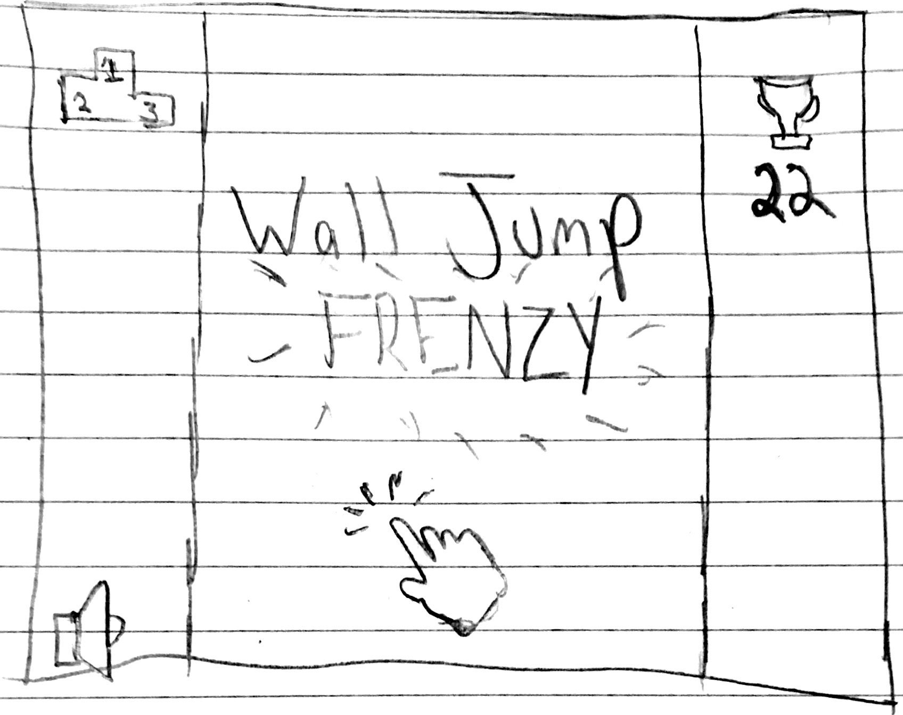
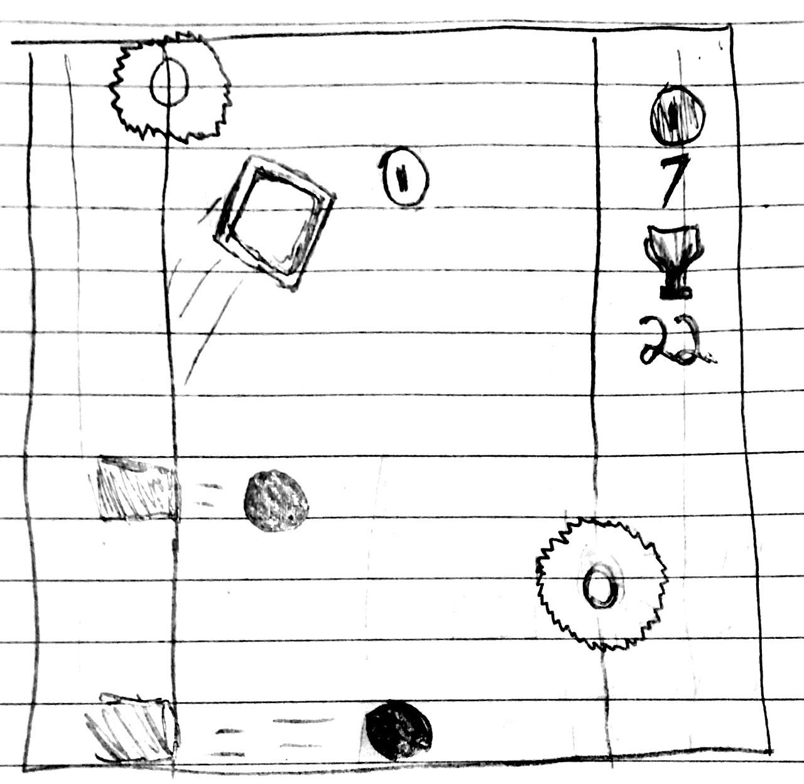

High Concept
While fixated on grabbing coins floating in the middle of the screen, the player must also jump back and forth from the left and right wall to avoid enemies and moving obstacles along the walls
Genre
Wall Jump Frenzy is an action and avoidance game that lets the player jump right in to fast paced, addicting, and challenging gameplay
Platform
Desktop and mobile friendly
Story
The game's story is mostly abstract but there is a general motivation for the in-game player to want to not get hit by deadly obstacles and the motivation for collecting coins and powerups would come from the actual human player. The general mood or feel of the game will be lighthearted and fun with slight tension sprinkled in when obstacles are spawned in
Aesthetics
Graphics Style: Colorful and cartoonish
Sound: 8-bit, ambient, techno
Sounds in-game:
- Background music
- Obstacle/enemy collision
- Coin pickup
- Game over
Gameplay
Mechanics
Jump while riding along a side wall towards the other wall and have the ability to jump anytime in midair, with a limit on how fast jumps can be activated. When the player does nothing they will slide down the wall and wrap around the screen vertically, this can be used to avoid obstacles as they won't wrap. Once the player makes it far enough they can run into powerups as well as coins that will help them stay alive longer
Controls
Mouse click and/or touchscreen tap
Teaching the game
There will be an onscreen prompt for the player to click or tap on the start screen. Clicking on the start screen will begin the game and cause the character to jump to a wall, so the player should link that action to another click or tap and understand the basics of the game from there. There will be a short instructions section on the site just in case
Player Learning
The player will not be told, however, that they can jump multiple times and will be left to stumble upon that themselves. The player must also learn certain traits or patterns of how the obstacles move or appear through playing to develop a more efficient playstyle and in return reach higher scores
Screenshots
A basic example of what the starting screen of the game might look like. Shows your highest score and lets you look at the leaderboard of all highest scores
A mockup of what a screenshot of gameplay might look like. Obstacles running down the sides of the walls and every now and then more obstacles are created that move horizontally across the screen.
About the Developer
My name is Nathan Wildofsky and I am a second year Game Design and Development student at RIT. I have extensive experience with programming gameplay physics and mechanics in C# and Unity but I am also very interested in the art and graphic design aspects of games through my experience with Photoshop and Maya